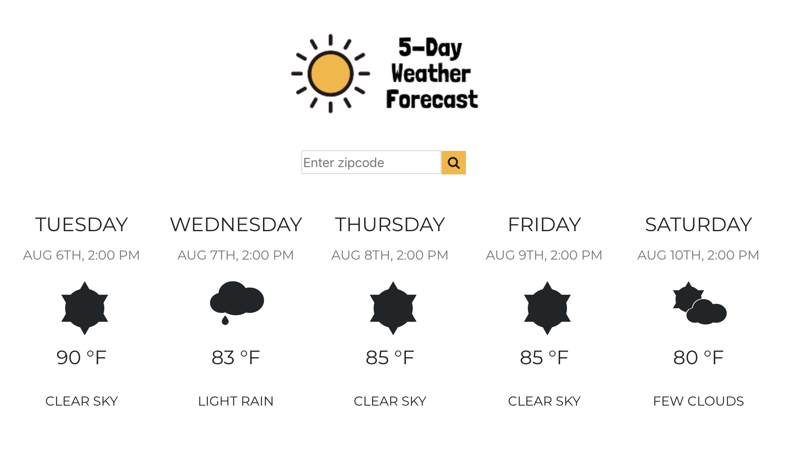

PORTFOLIO

treelife
A freelance project for a local business. Project included migration to a new hosting service and on-going updates/support for the client.
treelifearborists.com

React Weather App
Final project from General Assembly's React course. Uses Openweather API to display a 5-day weather forecast when user enters a zip code.
Live Preview